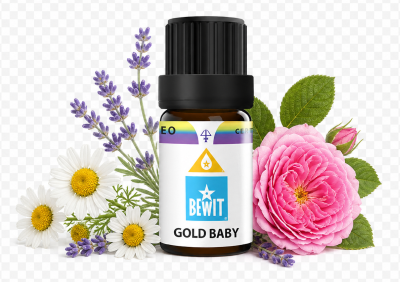

Pro děti
jemná přírodní podpora pro nejmenší
Zklidnění, klidný spánek, silná imunita nebo péče o citlivou pokožku. Ukáži vám, které esence jsou bezpečné a šetrné pro děti a jak je jednoduše zařadit do každodenní péče.

jemná přírodní podpora pro nejmenší
Zklidnění, klidný spánek, silná imunita nebo péče o citlivou pokožku. Ukáži vám, které esence jsou bezpečné a šetrné pro děti a jak je jednoduše zařadit do každodenní péče.

Jemný masážní olej pro zklidnění, péči o dětskou pokožku a podporu pohody.
Pomáhá při neklidu, suché pokožce i opruzeninách — jemně a s respektem k citlivé dětské kůži.
💧 Jak použít: přidej 1 kapku do nosného oleje a vmasíruj do pokožky dítěte jemnými pohyby, dokud se dítě neuklidní. Nebo přidej 1 kapku do difuzéru.
Zjistit více →💧 Masáž: 1 kapka + 30 ml nosného oleje — na plosky nebo tělo. Difuzér: 3–5 kapek. Koupel: 3–5 kapek + lžíce smetany nebo mýdla do vany.
Chci masážní olej💧 Jak použít: přidej 1–2 kapky do difuzéru nebo jednu kapku naředěnou v nosném oleji nanes na hrudník dítěte.
Chci podpořit dýchání💧 Jak použít: přidej 1 kapku do difuzéru nebo jednu kapku naředěnou v nosném oleji nanes na chodidla nebo zápěstí dítěte.
Chci zklidnit myslDětský organismus je citlivý — proto je důležité vždy esence ředit a používat v malých množstvích. Příroda nabízí jemnou, ale účinnou podporu, která nepřetěžuje. Zdravé a spokojené dítě začíná klidnou maminkou.
Mohlo by vás také zajímat:
🌿 Všechny esence, které na tomto webu doporučuji, jsou od BEWIT. Jako registrovaný zákazník můžete nakupovat se slevou až 50 % na vybrané produkty.
Registrace u BEWIT zdarma →